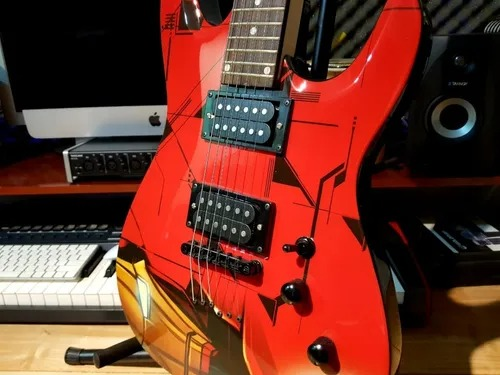
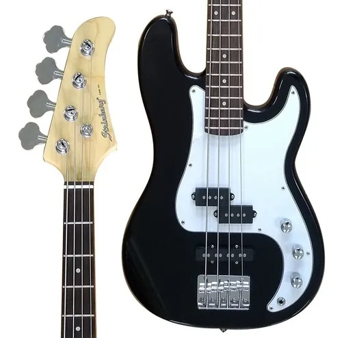
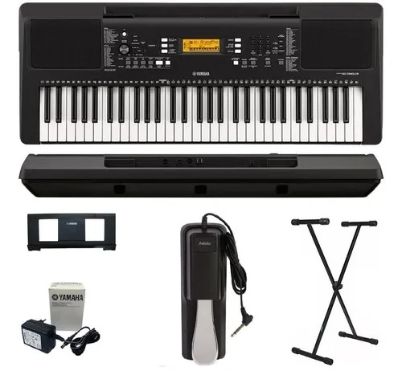
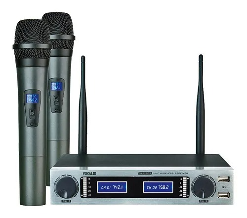

| Foto |
Descrição |
Preço (R$) |
Quantidade disponível |
|  |
Este produto se destaca pelo acabemento, sonoridade e principalmente pela inovação em toda linha. |
R$500,00 |
4 un |
|  |
É uma linha de produtos morderna e sofisticada! |
R$1.200,00 |
2 un |
 |
A série GARAGE possui um som extremamente controlado e equalizado, reforçando o ataque e o peso dos graves. |
R$3.500,00 |
2 un |
|  |
O PSR-E363 traz consigo um leque variado de 574 vozes, teclas sensitivas, modo dual e vários ritmos incluindo piano, flauta e guitarra. |
R$2.200,00 |
13 un |
|  |
O Vokal VLR-502 destaca-se pela sua versatilidade e adaptação: grava o som da sua voz com excelente qualidade e sensibilidade. |
R$700,00 |
5 un |